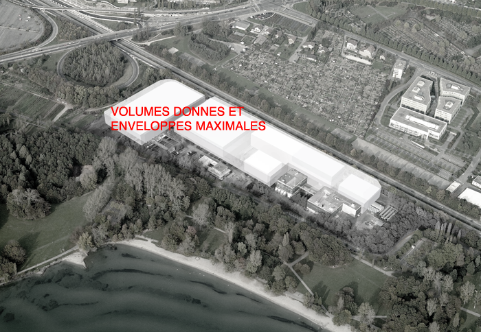
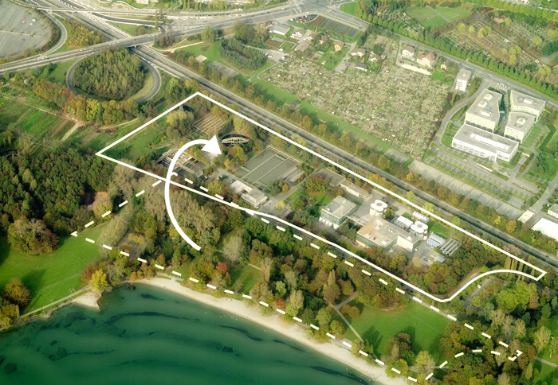
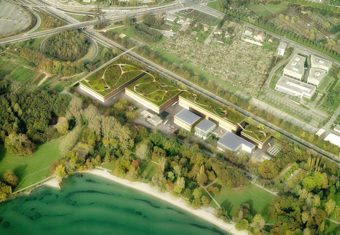
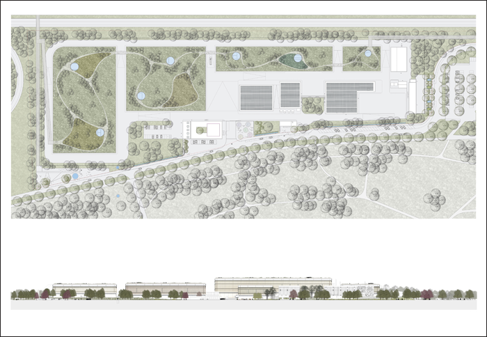
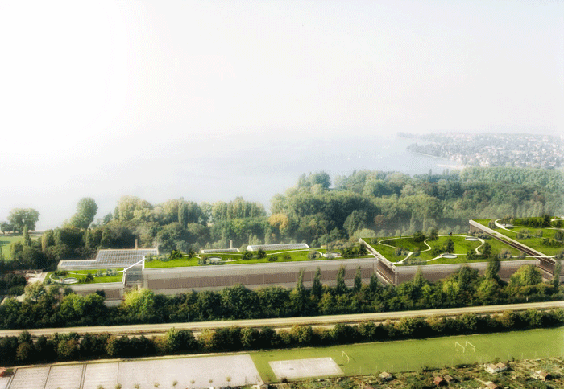
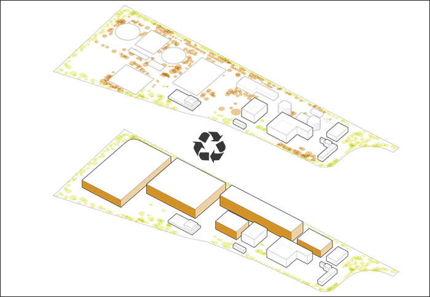
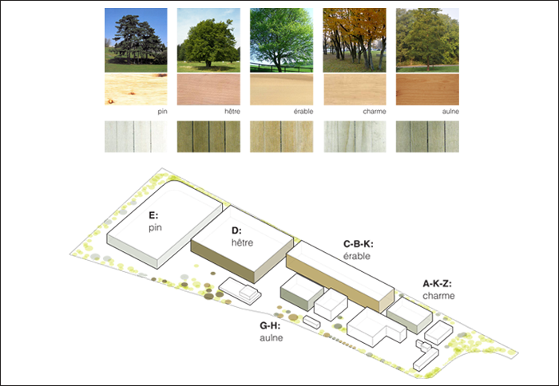
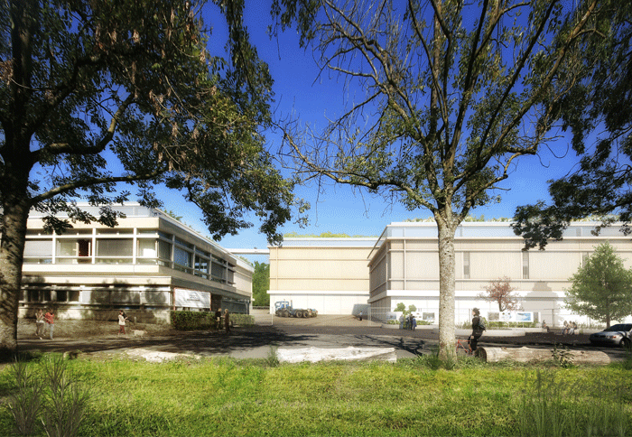
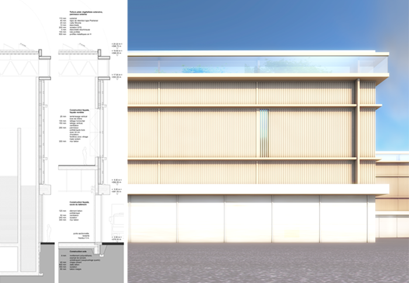
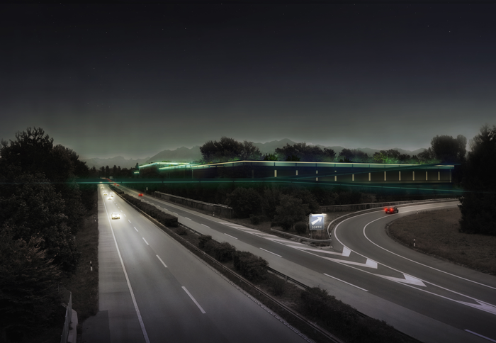

EXTENSION OF THE WASTEWATER TREATMENT PLANT
Location: Route de Vidy, Parc du Bourget, Lausanne (VD)
Customer: Ville de Lausanne, Direction des travaux, Service d’assainissement
Program: Concept for facades and roof of the treatment plant new buildings
Budget: 25’000’000 CHF
Date: 2014
Type: open competition
Team: NYX architectes, Terraplant AG (environment engineer), SIMA/BREER (landscape architect)
Images: NYX architectes